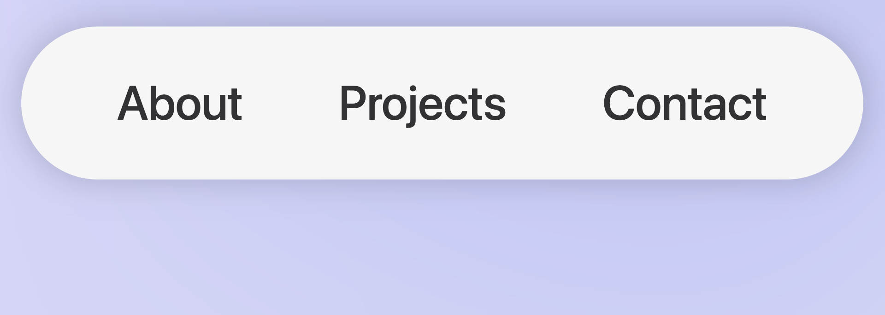
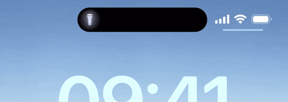
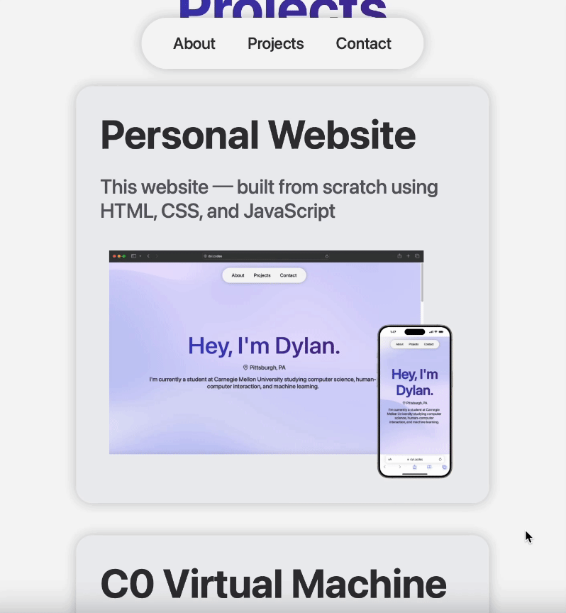

Personal Website
This website ─ built from scratch using HTML, CSS, and JavaScript.
Getting Started
After completing my first year at Carnegie Mellon, I knew one of the first projects I had to work on over the summer was a personal website. Many of my peers at CMU had one of their own, and building one for myself seemed like the perfect opportunity to both brush up on my web development skills and to create a means of showcasing my projects.
Prior to coming to CMU, I had taken a College in High School (CHS) web development class through the University of Pittsburgh. Although the class had taught me a great deal of valuable information about the fundamentals of HTML and CSS, it unfortunately was only a semester-long course, and we lacked the time to develop any sort of significant project. My personal website would be the first truly in-depth and detailed webpage I had created.
Prior to coming to CMU, I had taken a College in High School (CHS) web development class through the University of Pittsburgh. Although the class had taught me a great deal of valuable information about the fundamentals of HTML and CSS, it unfortunately was only a semester-long course, and we lacked the time to develop any sort of significant project. My personal website would be the first truly in-depth and detailed webpage I had created.
Design
To me, one of the most important aspects of any front-end product, especially with a website, is its design. Since users would be directly interacting with my webpage, before I wrote any code, I started by laying out a plan for its interface.
To do so, I utilized an interface design tool called Figma, commonly used for web design applications. Prior to Figma, the only experience I had had with graphic design software was with Canva, and, at first, Figma was certainly a lot to take in. However, I eventually found its tools to be intuitive and was able to utilize the software to its full potential. While I still don't consider myself an expert in using the software, it was certainly essential to the design of this website.
When looking for inspiration, I found that there was an overwhelming amount of incredible portfolio websites created by hundreds of talented developers. For days, I went back and forth between designs, with each portfolio website pulling me in different directions. However, I eventually found Olivier Ifrah's website. I admired its simplistic yet robust design, and its ability to convey detailed information to users in an organized and aesthetically pleasing manner was unparalleled.
I also found inspiration in something I use every day: my iPhone. If it wasn't already obvious by the fonts and overall design of the website, I find myself consistently captivated by Apple's design prowess. Their commitment to sleek, minimalistic aesthetics never fails to impress me, and I certainly wanted to incorporate those same design cues into my new website.
To do so, I utilized an interface design tool called Figma, commonly used for web design applications. Prior to Figma, the only experience I had had with graphic design software was with Canva, and, at first, Figma was certainly a lot to take in. However, I eventually found its tools to be intuitive and was able to utilize the software to its full potential. While I still don't consider myself an expert in using the software, it was certainly essential to the design of this website.
When looking for inspiration, I found that there was an overwhelming amount of incredible portfolio websites created by hundreds of talented developers. For days, I went back and forth between designs, with each portfolio website pulling me in different directions. However, I eventually found Olivier Ifrah's website. I admired its simplistic yet robust design, and its ability to convey detailed information to users in an organized and aesthetically pleasing manner was unparalleled.
I also found inspiration in something I use every day: my iPhone. If it wasn't already obvious by the fonts and overall design of the website, I find myself consistently captivated by Apple's design prowess. Their commitment to sleek, minimalistic aesthetics never fails to impress me, and I certainly wanted to incorporate those same design cues into my new website.
Elements
One of the first elements I created was my website's unique navigation bar. Its overall design was inspired by one of Apple's more recent additions to the iPhone lineup, the Dynamic Island. The island acts as a central hub for activities and actions for your phone, whether that be keeping track of a timer or showing you when your Uber will arrive. I wanted the navigation bar to act as a similar sort of information hub, allowing users to have quick and easy access to the section of the page they would like to go to.
Next, in order to give users an easy preview of each of my projects and a means to contact me, I implemented a card based design inspired by those found on Olivier Ifrah's website. The cards possess rounded corners and a drop shadow reminiscent of many of Apple's UI elements. Additionally, when hovered over, they grow larger, giving them a sort of lifelike characteristic and helping to make the website more interactive for the user.
Finally, in order to create a more lively feeling for the landing page, I was able to implement a script for a dynamic mesh gradient taken from whatamesh. The script, which is entirely written in JavaScript, illustrates a moving mesh of four distinct colors and gives the website a subtle yet distinct pop.

Next, in order to give users an easy preview of each of my projects and a means to contact me, I implemented a card based design inspired by those found on Olivier Ifrah's website. The cards possess rounded corners and a drop shadow reminiscent of many of Apple's UI elements. Additionally, when hovered over, they grow larger, giving them a sort of lifelike characteristic and helping to make the website more interactive for the user.

Finally, in order to create a more lively feeling for the landing page, I was able to implement a script for a dynamic mesh gradient taken from whatamesh. The script, which is entirely written in JavaScript, illustrates a moving mesh of four distinct colors and gives the website a subtle yet distinct pop.